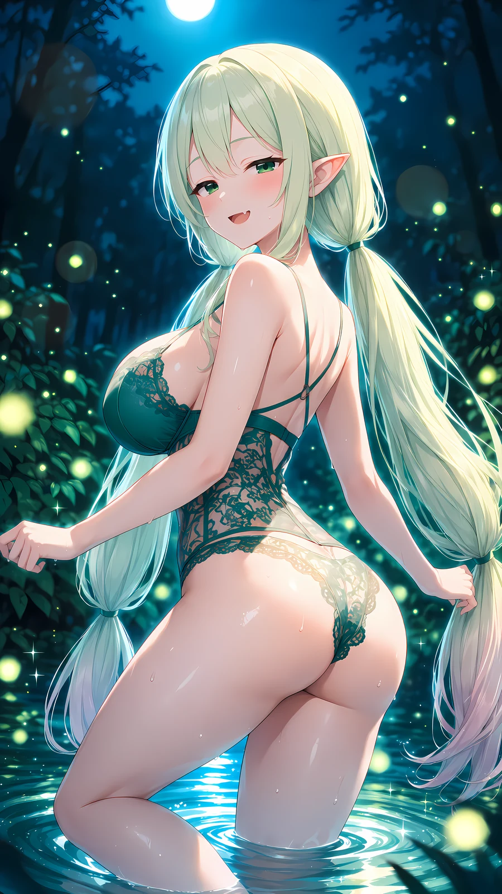

himitsu no nemurihime
絵はぜんぶAIで作っています。三人とも、長いあいだ同じ場所にいました。訪ねてもらえると嬉しいです。
下へ
その一
Lilia Noir
白銀の髪に紫の瞳。会社員をしています。着るものによって、少しだけ人格が変わるみたいです。洋館とキャンドルの灯りが好き。
その二
Sefiria Primevère Azur
金色の髪に青い瞳。お城から出たことのない王女です。外のことは、まだほとんど知りません。窓から見える景色をずっと数えていました。
その三
Tiruna Fleurette
淡い緑の髪にエメラルドの瞳。森から出たことのないエルフです。木漏れ日と、雨のあとの匂いが好き。人に会うのは少し苦手。
キャラクターで分けず、描いたものを順に置いています。
ここから先は成人向けです。18歳未満の方、苦手な方は開けずに戻ってください。
夜は、少しだけ素直になります。
誰も来ない時間の、お城のなか。

森の奥は、誰にも見えません。